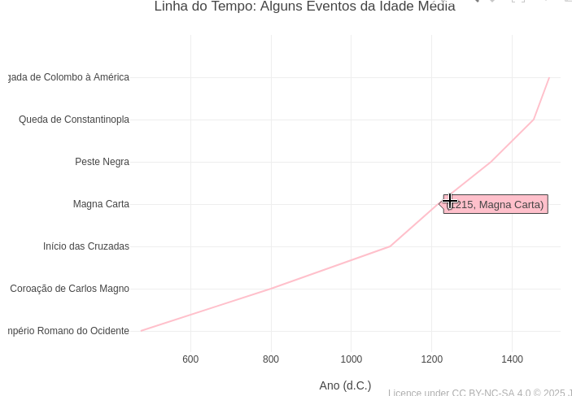

1. Choose a topic;
2. Click on the corresponding graph;
3. Click on "Add Plot";
4. Use the mouse for interactivity and/or edit the code.
Reminder: the editor uses infinite undo/redo in the code (Ctrl+Z / Shift+Ctrl+Z)!JSPlotly and GSPlotly at School
To illustrate the potential use of JSPlotly for elementary and high school education, here are some examples of simulations whose graphs are often found in textbooks and related content. To get the most out of each topic, try following the suggestions for parametric manipulation in each topic.
Instructions
1 Mathematics
Context - Trigonometry (EM13MAT306, EM13MAT308, EM13MAT307)
The following simulation aims to facilitate the visualization of some concepts in trigonometry, sine, cosine, and tangent. The code allows you to use a drop-down menu for each trigonometric function, as well as a slider to change the frequency in radians.
Equation:
1. Sine function:
\[ y = \sin(\omega x) \]
2. Cosine function:
\[ y = \cos(\omega x) \]
3. Tangent function:
\[
y = \tan(\omega x)
\]
Suggestion:
1. Select the sine, cosine, and tangent functions using the drop-down menu.
2. Try changing the frequency of the function using the slider.
3. Overlay a sine graph and a cosine graph to observe their differences.
4. Repeat the same for the tangent graph.2 Financial Mathematics
Context - Compound Interest (EM13MAT402):
Also known as “interest on interest”, compound interest adds value to capital over time, resulting in the growth of the final amount.
Equation:
\[ M = C \cdot (1 + i)^t \]
Where,
- M: final amount
- C: initial capital
- i: interest rate per period (in decimal)
- t: number of periods (e.g., months)
Suggestion:
1. Vary the contract period, the monthly interest rate, or the initial amount.
2. Try combining the parameters in the variation.
3. Evaluate the visual difference between an investment and a loan by entering a positive initial capital value for the former and a negative value for the latter.
4. Observe the downward curve for a simulated loan with negative initial capital. The remaining values refer to the outstanding debt to pay off the loan.3 Statistics
Context - Normal distribution curve (EM13MAT316, EM13MAT407, EM13MAT312)
Sampling and population are common topics for data observation in analytical procedures. Statistical distribution curves for this involve the t-Student, F-Snedecor, Chi-square, and normal distribution. The normal distribution curve reflects the statistical behavior for natural phenomena in a given data population.
The example aims to illustrate the use of the z transformation, the calculation of critical values, and the interpretation of the area under the curve in the study of normal distribution and statistical inference.
Equation
The density function of the normal (or Gaussian) distribution is given below?
\[ f(x) = \frac{1}{\sigma \sqrt{2\pi}} \, e^{ -\frac{(x - \mu)^2}{2\sigma^2} } \]
Where:
- \(\mu\) = 0 (mean of the distribution);
- \(\sigma\) = 1 (standard deviation);
- x = continuous random variable; f = normal distribution density function
From the equation above, we can extract z, the value of the standardized random variable for zero mean and unit standard deviation, representing the value on the x-axis:
\[ z = \frac{x - \mu}{\sigma} \]
Suggestion:
1. Try changing the value of “p” and running the graph. This value represents the probability of observing, under the null hypothesis, a value as extreme or more extreme than the observed value — that is, it measures the evidence against the null hypothesis. In the graph, it represents the area under the normal curve in the critical regions, indicating the chance of the observed result occurring by pure chance.4 Physics
4.1 Context - Elastic potential energy (EM13CNT102, EM13CNT202, EM13MAT402)
The deformation of an elastic material is directly proportional to the force exerted on it and limited to the properties of the material.
Equation
The behavior of an ideal spring is described by Hooke’s law below:
\[ F = -k*x \]
Where:
- F = restoring force of the spring (N);
- k = spring constant (N/m);
- x = deformation (m).
On the other hand, the elastic potential energy involved is described by the following quadratic relationship:
\[ E = \frac{1}{2}*k*x^2 \]
Where:
- E = elastic potential energy (J).
Suggestion:
1. Try changing the value of the sprin´s elastic constant to highlight its effect, relating it to stiffer or less stiff springs;
2. Change the spring´s deformation limits in the code´s "control structure" (e.g., "for (let x = -0.7)"), and observe the effect on the maximum potential energy;
3. Note that, due to the quadratic operation on the deformation value, the potential energy is always positive.Context - Motion of bodies (EM13CNT102):
The following code illustrates the trajectory of an oblique launch with an angle adjustable by a slider, useful for exploring the concepts of kinematics.
Equation:
1. General equation
\[ y(x) = x \cdot \tan(\theta) - \frac{g}{2 v_0^2 \cos^2(\theta)} \cdot x^2 \]
Where:
- y(x): height as a function of horizontal distance;
- x: horizontal position (m);
- \(\theta\): angle of launch relative to the horizontal (radians or degrees);
- v0: initial velocity of the projectile (m/s);
- g: acceleration due to gravity (9.8 m/s²\(^{2}\))
2. Total flight time:
\[ t_{\text{total}} = \frac{2 v_0 \sin(\theta)}{g} \]
3. Horizontal position over time
\[ x(t) = v_0 \cos(\theta) \cdot t \]
Suggestion:
1. Notice that there is a slider for initial angles in the simulation. Drag the slider to another angle and add the graph, comparing the effect of this modification.
2. Change the initial velocity in the code and observe the effect on the graph.
3. Simulate a "lunar condition" for the trajectory, with gravity around 1/6 that of Earth (~1.6 m/s²).5 Chemistry
Context - Heat Capacity (EF09CI06, EM13CNT104, EM13CNT203)
The following simulation aims to observe the relationship between heat exchanged (Q), mass (m), heat capacity (c), and temperature variation (\(\Delta\)T).
Equation:
\[
Q = c \cdot m \cdot \Delta T
\]
Suggestion:
1. Try varying the temperature initially, overlaying some graphs;
2. Also vary the mass in the code editor for comparison.5.1 Context: Mixture of substances in an exothermic reaction - 3D graph (EF09CI02, EM13CNT103, EM13CNT103)
Simulations can be performed without necessarily involving a mathematical relationship, as in the experimental observation of two variables, such as time and concentration, simulating an exothermic chemical reaction. Here is an interactive example in 3D.
In this case, the equation used in the editor involves a smooth variation of temperature over time, using the sine function and an initial temperature (see the code).
Suggestion:
1. Try varying the temperature initially, overlaying some graphs;
2. Also vary the mass in the code editor for comparison.6 Biology
Context - Population Growth Model with Lag Phase (EM13CNT102)
This model presents a logistic function that simulates population growth (e.g., microorganisms, cells), accompanied by a delay component. By varying the parameters in the editor, it is possible to estimate various population growth profiles.
Equation:
\[ N(t) = \frac{K}{1 + \left(\frac{K - N_0}{N_0}\right) \cdot e^{-r \cdot A(t) \cdot t}}, \quad \text{with } A(t) = \frac{1}{1 + e^{-k(t - t_0)}} \]
Where:
- K = environmental carrying capacity;
- N0 = initial population;
- r = intrinsic growth rate;
- A(t) = growth activation factor with delay (lag phase);
- t0 = midpoint of transition between lag phase and log phase;
- k = delay smoothing constant (set to 0.5 in the code)
Suggestion:
1. Try varying the parameters of the equation, combining some and comparing their effects on the graphs:
a. Carrying capacity;
b. Initial population;
c. Growth rate;
d. Delay (lag phase);Context - Energy efficiency and the food chain (EF06CI02, EM13CNT202, EM13CNT203)
Here is an example to illustrate energy transfer between different trophic levels in a food chain. Although there is no mathematical function that describes it, the 10% rule of ecological efficiency between levels of the chain can be applied, resulting in a logarithmic transfer relationship.
Suggestions
1. Lindeman's rule, outlined in the reference above, establishes a variation of 5-20% energy efficiency in the ecosystem. So, try overlaying the curves with these rates;
2. If you want to observe the logarithmic relationship of energy transfer, add the command "type: 'log'," just below "title: 'Available energy (units)',".7 Geography
Context: Map of Brazil and Capital Cities (EM13CHS101, EM13CHS202, EM13CHS301)
JSPlotly is not just about equations! With the Plotly.js library that composes it, you can also produce interactive maps, such as the simulation below.
Suggestion:
1. Try using the mouse scroll wheel and the "pan" icon on the top bar to interact with the map.8 History
Context - Distribution of slaves in the Americas from 1500 to 1888 (EF08HI06, EM13CHS104, EM13CHS503):
This simulation presents an interactive bar chart for selecting a period from a drop-down menu, tangent to the estimated number of enslaved Africans landed in the main regions of the Americas. The data are rough estimates to illustrate the visualization potential of the application, although they serve as a starting point for more accurate educational discussions. Sources for consultation include Slave Voyages.
Suggestion:
1. Try switching between periods in the drop-down menu, comparing estimates of slave traffic;
2. Select a period, create the graph, select another period, and add another graph. This allows you to compare the number of slaves brought in by the double bars formed, and hover your mouse over each bar.Context - Timeline of events in the Middle Ages (EM13CHS101, EM13CHS102)
 Source: Encyclopedia.com
Suggestions:
1. Try changing events and periods in the code, and assign them to another period in human history.9 Languages
Context - Slang spoken in Brazil from 1980 to 2020 (EF89LP19, EM13LGG102)
This simulation is intended to estimate the use of slang spoken in Brazil over the last 40 years. The representation is in a pie chart, and the selection by decade is in a drop-down menu.
1. You can use the mouse to hover over each bar to see the "tip" (hint) for that data point in the chart.Context - Frequency of words in text (EM13LGG101, EM13LGG302, EM13LGG303)
Suggestion
1. Try replacing the code text with another;
2. Try varying the number of most frequent terms in the variable "const entradas" (optionally, also vary in the graph title, to make sense);
3. Compare a text in Portuguese with its translation into English or another language.10 Art
Context - Pitch, harmony, and timbre (EF15AR06, EM13ARH402)
The following example illustrates the concepts of pitch (frequency), harmony, and timbre (pure waves and harmonics) for a graph of musical tones (diatonic scale).
10.1 Suggestion
1. Test other keys (C, G, D, etc.), observing how the pure wave appears when the graphs are superimposed;
2. Evaluate the difference between a pure wave and one produced with musical instruments, involving natural harmonics. To do this, replace the Boolean option "false" with "true" in the variable "const ondaComposta".11 STEAM
Context - Pottery wheel (EM13MAT101, EM13MAT403, EM13CNT204, EM13AR01, EM13AR02)
The platform also allows creations for integration in Science, Technology, Engineering, Arts, and Mathematics (STEAM). Here is an example of a simulation for ceramic turning and manual clay molding, which allows you to experiment with symmetrical and rounded shapes, such as vases, bowls, and pots.
1. Change the height of the vase, its shape, and its colors by editing the code in the specific fields.11.1 Context - Mini CAD (EM13MAT301, EM13MAT503, EM13MAT402)
Here is an example of code for manipulating 3D geometric shapes (curves or lines) when creating a mini CAD (Computer-Aided Design).
1. Try changing the base, height, and curvature parameters of the code, also varying the sign of the values (positive, negative);
2. Change a trigonometric function (lineX or lineY, sine to tangent, for example), and overlay it on the plot;
3. Overlay geometric figures with different color palettes.
4. Create symmetrical figures by overlaying a curve with a positive parameter on one with the same negative parameter.